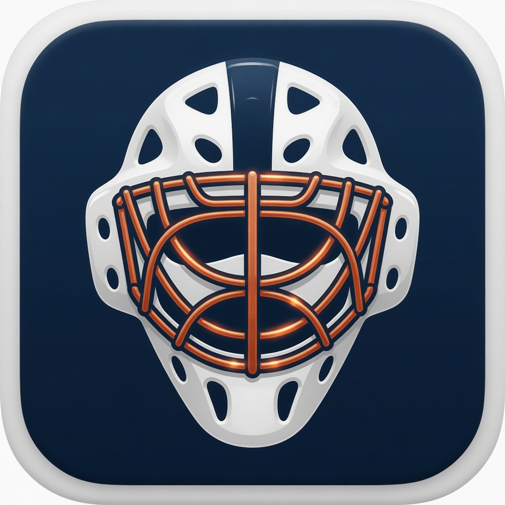

Short version: Your level, body mass, session log, recovery check-ins, theme, and vision scores stay on your iPhone. There is no account. A Google AdMob banner can appear. Ad requests are non-personalized, and GoalieForge does not track you across other companies’ apps.
The app saves this on the device:
Justin Novikow does not receive a copy. Deleting the app deletes this save unless it is in a device backup.
Research sources and the support pages open in the browser when you tap them. GoalieForge does not run its own web browser and does not send your log with those taps.
A banner from Google AdMob can sit above the tabs so the app can stay free. Each request is non-personalized. GoalieForge does not ask to track you across other companies’ apps, and it does not send Google your level, body mass, logs, theme, or vision scores. Google may receive a device identifier and basic ad-interaction data to deliver the banner and limit how often an ad appears. On the Development (U9–U12) level, ad requests are also marked as child-directed. The banner stays off during a timed session and during a vision drill. Google’s privacy policy.
A younger goalie can use the development plans with a parent or coach. GoalieForge is not in the App Store Kids category. It does not ask for a name, a photo, or a contact, and it does not let anyone post to a public page. Development-level ad requests are marked child-directed.
Questions about this policy: jnovikow@gmail.com